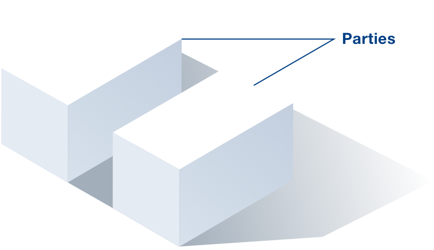
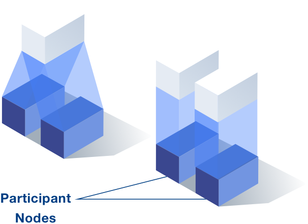
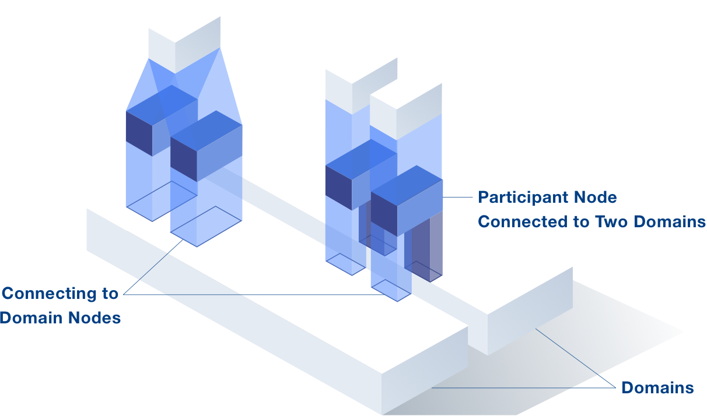

Parties
In Canton, Parties can create, or participate in, distributed workflows written in Daml™. A Party can be a legal entity, a physical person, or just one of many accounts for a person/entity.


Domains and Domain Nodes
Every node can connect through Canton to multiple Daml ledgers. Each Daml ledger instance is called a Domain in Canton.
A domain can be implemented in different ways, depending on the trust requirements: For low trust environments, it can be implemented on a distributed ledger or on enclaves. Or it can be implemented in a centralised way if a trusted operator exists.
So called Domain Nodes facilitate
Canton’s synchronization protocol by acting as messaging hub and gateway for the participant nodes to the Daml ledgers.
All transaction data transferred between Participant Nodes is end-to-end encrypted and only selectively shared with other Participant Nodes on a strict need to know basis. The domains, therefore, do not learn the transaction contents. Also, Canton guarantees the integrity of ledgers, even in the presence of malicious participants. Furthermore, any Party can extend the ledger at any time without adversely impacting others.